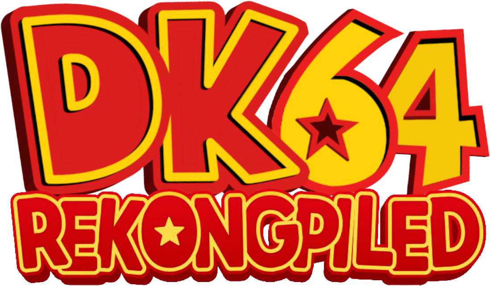

Fully Intact N64 Effects
All graphical effects that would not scale beyond a 4:3 aspect ratio are preserved, ensuring visual consistency between the original game and the recomp.

This is the official website for the DK64 Recomp project, a project to be able to take the original Donkey Kong 64 game and recompile it to play on modern platforms.
All graphical effects that would not scale beyond a 4:3 aspect ratio are preserved, ensuring visual consistency between the original game and the recomp.
Music and sounds are perfectly faithful to the original N64 version of the game, with all audio processing intact and no popping or stuttering.
Ingame menus have been moved to a simple settings page that persists between sessions.
Play at any framerate you want thanks to functionality provided by RT64! Game objects and terrain, texture scrolling, screen effects, and all HUD elements are all rendered at high framerates.
Any aspect ratio is supported, with all effects modded to work correctly in widescreen.
Install community made mods and texture packs! We even provide a mod discovery page ingame to view the mods available today!
Transitions are dramatically faster than on original hardware.
A Linux binary as well as a Flatpak is available for playing on most up-to-date distros, including on the Steam Deck.
World detail remains visible from farther away, improving visibility across larger spaces.
You can now play using mouse and gyro controls in contrast to the original style of gameplay.
Modern performance changed some timings, so the second Fungi Forest rabbit race and harder Krazy Kong Klamour have been slowed down to stay fair.
The bug that prevented Hideout Helm medals from being collected after leaving without picking them up has been patched.
Head to the Releases page and scroll down to Assets. That's just a list of downloads, one for each platform. Pick the one that matches your computer below.
The Recomp only works with a US ROM of Donkey Kong 64. We do NOT distribute the ROM itself, you need to legally dump your own copy of the ROM before playing the Recomp.
While we don't implement many changes directly into the recomp
itself you can always help make changes there for new integrations
such as ray tracing!
Outside of that we highly suggest you contribute to our mod registry
so you can help make your mods more discoverable to the community
and help others find your work!